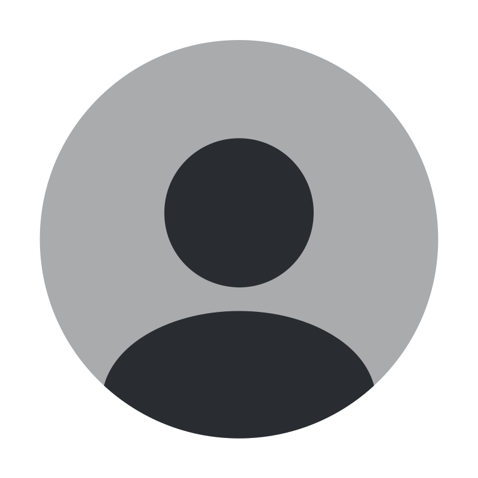

Arnav Bodke
Student at College Of Engineering Pune (Batch '23)
Course : BTech Mechanical Engineering
Gender : Male
DOB : 14 May 2005

Education (2008 - 2023)
- DAV Schools Network - Pune
- Primary Education
- Subjects :
- Maths
- Science
- Social Studies
- 2nd Language - Hindi
- Podar International School - Powai (2014-2021)
- Secondary Education
- Subjects :
- Maths
- Science
- Social Studies
- 2nd Language - Hindi
- 3rd Language - Marathi
- Optional Subject - Basics of Computer Applications
- R.N Podar School - Santacruz (2021-2023)
- Senior Secondary Education
- Subjects :
- Maths (Standard)
- Physics
- Chemistry
- English
- Computer Science (Python + SQL)
Skills
- Creative Adaptability
- Highly Imaginative Individual
- Flair for Thinking Outside the Box
- Generates Fresh and Original Ideas
- Ability to approach challenges from Unconventional Angles
- Leadership
- Drives the team to Achieve Outstanding Results
- Natural ability to Inspire and Motivate
- Fosters a Collaborative and Cohesive Work Environment
- Manages Resources Effectively
- Cultivates a culture of Growth and Development
- Organization
- Ability to Streamline Processes
- Ability to Priortize Tasks
- Ensures that Projects are Completed on Time and Within Budget
- Ensures a Well-structured Work Environment
- Video Production and Editing
- Eye for Detail
- Enhances the Final Product's Impact
- Continuous Exploration of New Trends in the Field
- Presentaions
- Keen understanding of Visual Communication and Storytelling
- Effectively conveys Complex Ideas and Information
- Design Visually Appealing Slides
- Strong Command of Presentation Software and Multimedia Tools
- HTML
- Strong Understanding of HTML's Structure and Syntax
- Can Create Well-organized and Semantic Web Pages
- Ensures to Write Error-free Code
Recent Certifications
- Theatre - Script Writer
Drishtikon - An annual event hosted by R.N Podar School (2021)
- Save Soil - Participation
Letter to the Indian Prime Minister (2021)
- Literary Lieutenant
Story Mirror - Certificate Of Appreciation (2021)
Other Plugins
Hobbies
Contact